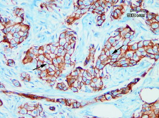
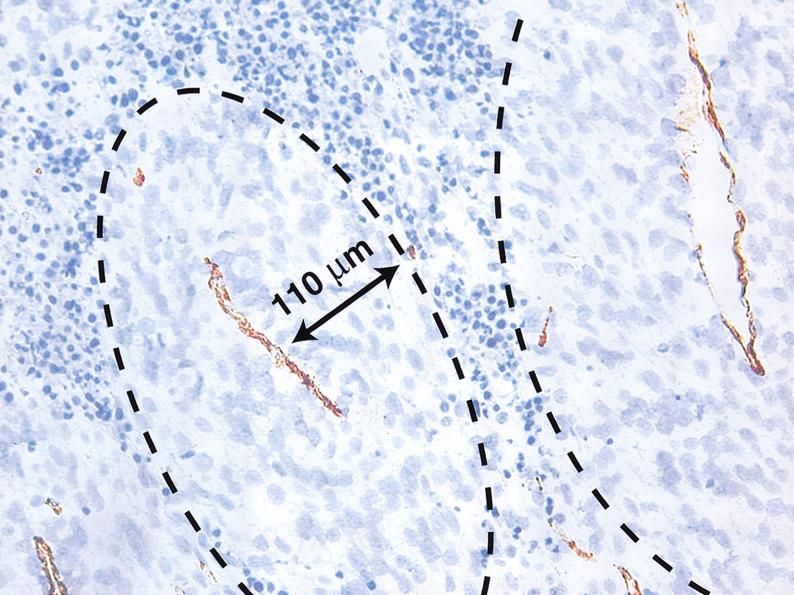

Vähirakkude interaktsioonid strooma rakkudega ja angiogenees
Onkobioloogia
Taavi Päll
vanemteadur, VTAK
Recap
Genoomiterviklikkuse kontroll
- Epiteeli struktuur minimeerib geenikahjustusi.
- Koes kõige seespool asub tüvirakunišš.
- Soole mukoosa kaitseb toksiinide/mutageenide eest.
- Raku toksiinipumbad (P-glükovalk, Pgp)
- Tüviraku nišš ei jagune intensiivselt.
- Biokeemilised DNA reparatsioonimehhanismid: MMR, BER, NER.
- Kahjustuste tolereerimismehhanismid, et vältida genoomi ebastabiilsust (translesion DNA synthesis).
Vähi mikrokeskkond: strooma
Vähi mikrokeskkond
Kasvajarakud ei eksisteeri organismis isoleeritult, neid ümbritseb kompleksne keskkond, mis koosneb:
- normaalsetest rakkudest,
- sekreteeritud valkudest,
- füsioloogilistest madalmolekulaarsetest ühenditest (hormoonid),
- veresoontest.

Kasvajad sisaldavad suures mahus strooma rakke


Kasvajad sisaldavad suures mahus strooma rakke
- Kõige sagedasemad vähitüübid nagu rinna, käärsoole, mao ja pankrease kartsinoomid sisaldavad kuni 90% mitte-neoplastilisi rakke.
- Hodgkinsi lümfoomis on üksikud neoplastilised tsütokiine sekreteerivad Reed-Steinbergi rakud ümbritsetud 99% normaalsetest lümfotsüütidest.

Kasvaja mikrokeskonnas resideeruvad rakutüübid
Lisaks neoplastilistele rakkudele leidub vähis erinevas proportsioonis normaalseid rakke:
- T lümfotsüüdid, B lümfotsüüdid, NK ja NKT rakud, makrofaagid (TAM), müeloidset päritolu suppressor-rakud (MDSC), dendriitrakud, neutrofiilid, fibroblastid, müofibroblastid, adipotsüüdid, endoteelirakud, peritsüüdid, lümfoid-endoteel.

Fibrotsüüdid, nuumrakud, silelihasrakud
- Ülemiste hingamisteede kartsinoomis (HNSCC) on erinevat tüüpi rakke:
- CD34+ fibrotsüüdid (inaktiivsed fibroblastid) normaalses (A) ülemiste hingamisteede stroomas ja kartsinoomi (üleval paremal) ümbritsemas (B).
- \(\alpha\)-SMA+ silelihasrakud (C) ja CD117+ nuumrakud (D) vähi stroomas.
- CD117+ nuumrakud normaalses stroomas (E) ja kartsinoomis (F).

Mis põhjustab erinevate normaalsete rakutüüpide olemasolu kasvajas
Kuidas saab moos kommi sisse?
On välja pakutud kaks alternatiivi:
- 1. Vähis olevad normaalsed rakud on jäänukid algsest koest enne tumorigeneesi algust.
- 2. Normaalsete rakkude viibimine kasvajas on tingitud heterotüüpsest signalisatsioonist.
Heterotüüpne ligand-retseptor signalisatsioon
- Erinevate rakutüüpide vahelist signaliseerimist nimetatakse heterotüüpseks signalisatsiooniks.
- Heterotüüpne signalisatsioon soodustab või pidurdab kõrvalolevate teiste rakutüüpide jagunemist ja/või ellujäämist.
- Näiteks: soole epiteelirakud ekspresseerivad c-MET retseptorit aga soole mesenhüüm selle ligandi HGF/SF kasvufaktorit.

Kasvajarakud kontrollivad stroomat
- Heterotüüpne signalisatsiooni faktorid
- mitogeensed kasvufaktorid (HGF/SF, VEGF, TGF-\(\alpha\), PDGF),
- kemokiinid (SDF-1/CXCL12, CXCL5)
- kasvu inhibeerivad signaalid (TGF-\(\beta\)),
- troofilised faktorid mis vahendavad ellujäämist (insulin-like growth factor-1/2, IGF-1/2).
- Sarnaselt normaalse epiteeliga kontrollivad ka kartsinoomi rakud ümbritsevaid normaalseid kudesid indutseerides neid kasvama.
- Teistpidi, strooma rakud võivad signaliseerida vähirakkudele ka kasvu pidurdavalt.
Heterotüüpsed interaktsioonid mängivad rolli vähi tekkel ja arengus
- Krooniliste põletike korral toimivad strooma rakud nagu makrofaagid, neutrofiilid ja lümfotsüüdid vähi teket soodustava faktorina kuna loovad pro-inflammatoorse keskkonna (sekreteerivad TNF-\(\alpha\) ja prostaglandiine).
- Kartsinoomi rakud sekreteerivad PDGF-i, mille retseptorid on ekspresseeritud strooma rakkudel - fibroblastid, müofibroblastid ja makrofaagid. Strooma rakud sekreteerivad vastusena PDGF-ile IGF-1, mis omakorda soodustab vähirakkude kasvu ja ellujäämist.
- Melanoomid sekreteerivad samuti PDGF-i, mis indutseerib fibroblastidel IGF-2 sekretsiooni.
- Rinnavähi rakud sõltuvad strooma fibroblastide poolt sekreteeritud SDF-1/CXCL12 kemokiinist ja HGF/SF-st.
Vähiraku liinide ksenograftid hiires erinevad reaalsetest kasvajatest
Note the relative uniformity of the HT-29 (A) and SW480 (B) tumors relative to the primary (C) or PDX tumor (D).

- Patient-derived xenograft (PDX) models of colorectal cancer recapitulate primary tumor heterogeneity.
- Hematoxylin and eosin (H&E) stained slides of xenografts generated by traditional HT-29 (A) or SW480 (B) colorectal cancer cell lines, vs a primary colorectal tumor, SCRX-PDX-CR101-p0 (C), and the same patient’s PDX tumor following passaging through NOD/SCID mice, SCRX-PDX-CR101-p1 (D).
Vähk on kui haav mis ei parane
- Harold Dvorak avaldas 1986. aastal oma tähelepanekud, et vähikolle meenutab mitmes mõttes haava mis ei suuda paraneda artiklis "Tumors: Wounds That Do Not Heal" HF Dvorak, 1986.
- Haava paranemisel eristatakse põletikuline faas, proliferatiivne faas ja küpsemisfaas.

Geeniekspressioon näitab haava fibroblastide ja vähi sarnasust


Vähk kui haav
Fibriin tuumoris
- Haavas vabanev koefaktor (tissue factor) käivitab vere koagulatsioonikaskaadi mille tulemusena vere plasma fibrinogeen konverteeritakse trombiini vahendusel fibriiniks ning moodustub haava sulgev klomp.
- Fibriin (pruun värvus) naha stroormas ümber rinnavähi naha metastaasi.

Haavas indutseeritakse epiteeli rakkudel EMT
- Haava paranemise põletikulises faasis fibriinklompi põhjustavad vereliistakud ja seejärel klompi migreeruvad makrofaagid sekreteerivad TGF-\(\beta\) ja TGF-\(\alpha\) kasvu faktoreid.
- TGF-\(\beta\) põhjustab haava kõrval olevate epiteelirakkude epiteliaal-mesenhümaalse transformatsiooni (EMT).
- Sellised EMT läbinud epiteelirakud muutuvad müofibroblastideks, migreeruvad fibriinklombi alla ja katavad dermise. Müofibroblastides ekspresseeritav silelihas aktiin põhjustab haava kokku tõmbamise.

Epiteliaal-mesenhümaalne transformatsioon (EMT)
EMT on protsess mille käigus epiteelirakud kaotavad polaarsuse, rakkudevahelised adhesioonid, omandavad amööbse liikumise ja invasiivse võime
- Vähi metastaaside teke on seotud EMT-ga: kartsinoomi rakud kaotavad E-kadheriini ekspressiooni, murravad läbi basaalmembraani, sisenevad vereringesse, moodustavad distaalseid mikrometastaase ja läbivad EMT-le vastupidise protsessi MET (mesenhümaal-epiteliaalne transformatsioon).
- EMT annab vähirakkudele resistentsuse onkogeen-indutseeritud senesentsile.
- EMT-ga seotud transkriptsioonifaktorid Twist1, Twist2 ja ZEB1 kaitsevad ka inimese ja hiire fibroblaste senesentsi eest.
Epiteliaal-mesenhümaalne transformatsioon

Kasvaja fibroblastid (CAF)
CAF-id on kõige suurearvulisem vähi strooma rakutüüp tahketes kasvajates

- Normaalselt, koe kahjustuste korral diferentseeruvad fibroblastid müofibroblastideks(=CAF).
- CAF-id võivad olla erinevat päritolu ja diferentseeruda ka
- epiteelist,
- endoteelist (endothelial-to-mesenchymal transition),
- silelihasrakkudest,
- mesenhümaalsetest tüvirakkudest.
Kasvaja fibroblastid
Indutseerivad ja soosivad tuumori kasvu, angiogeneesi, põletikku ning metastaase
- Sekreteerivad tervet rida pro-tumorigeenseid kasvufaktoreid, sh. HGF/SF, FGF-e, SDF-1/CXCL12 ja TGF-\(\beta\).
- TGF-\(\beta\) roll: vähirakkudes on kas inaktiveerinud kogu TGF-\(\beta\) rada või on inaktiveeritud p15 geen CDKN2B.
- Kolorektaalvähis on TGF-\(\beta\) ekspressioon nihkunud epiteeli rakkudelt strooma rakkudele ja CAF-idele.
- Epiteelirakud ekspresseerivad märksa vähem p-SMAD2/3 võrreldes strooma rakkudega või pre-maliigses koes olevate epiteelirakkkudega.
- TGF-\(\beta\) indutseerib epiteliaal-mesenhümaalset transformatsiooni (EMT).
TGF-\(\beta\) signalisatsioon muudab fibroblastid CAF-ideks

Kasvaja makrofaagid

Kasvaja makrofaagid
Koe makrofaagid on müeloidse liini rakud mis diferentseeruvad tsirkuleerivatest monotsüütidest
- Makrofaagid osalevad rakulises immuunvastuses, immuunsüsteemi regulatsioonis ja haava paranemises.
- Makrofaagid võivad diferentseeruda kahes suunas:
- tüüp 1 (M1), vastusena bakteriaalse infektsioonile ja Th1 sekreteeritavale INF-\(\gamma\) muutuvad aktiivselt fagotsüteerivateks rakkudeks, suunatud ka vähirakkude vastu;
- tüüp 2 (M2), vastusena nt. vähi poolt sekreteeritud tsütokiinidele IL-4, IL-10, IL-13 või TGF-β ja prostaglandiin E2 diferentseeruvad makrofaagid immuunosupressiivseteks jasarnaselt Th2 rakkudele hakkavad Th1-supresseerivaid tsütokiine tootma (IL-10 ja IL1\(\beta\)).
Makrofaagide polarisatsioon
Vähis polariseeruvad makrofaagid immuunsupressiivses M2 suunas

Makrofaagide funktsioonid vähi mikrokeskkonnas

Hüpoksia
Veresooned varustavad kudesid hapniku ja toitainetega

Kasvaja angiogeneesi paradigma
Tahked kasvajad ei saa areneda üle 1 mm suuruse ilma angiogeneesi initsieerimata

Vähi veresooned
- Kasvaja veresooned on heterogeense luumeniga, lekkivad ja ebakorrapärased

Angiogenic switch
- Angiogeneesi käivitumine sõltub pro-ja anti-angiogeneetiliste faktorite tasakaalust.
- Pro-angiogeneetilised faktorid on VEGF, bFGF, Ang-2, Bv8.
- Anti-angiogeneetilised faktorid nt. maatriksi komponendid trombospondiin-1 (TSP-1), endostatiin, canstatin, tumstatin. Lahustuvad faktorid interferon-α ja -β (IFN-α and -β), angiostatin.

Veresoonte arv seostub halvema elulemusega rinnavähis

VEGF ekspressioon vähis on seotud elulemusega

Vähi versoonte klassifikatsioon
| Soone tüüp | Soone omadused | VEGF-A sõltuvus |
|---|---|---|
| Emasoon, mother vessel (MV) | Suured, õhukeseseinalised, hüperpermeabiilsed, kergelt fenestreeritud peritsüütide vaesed sinusoidid mis on pungil täis erütrotsüüte | + |
| Kapillaarid | Moodustuvad MV-dst sisemise jagunemise teel | − |
| Glomeruloidsed mikrovaskulaarsed proliferatsioonid | Väheorganiseerunud vaskulaarsed struktuurid. Sisaldavad endoteelirakke ja peritsüüte. Minimaalse luumeni ja iseloomulikult rikkaliku mitmekihilise basaalmembraaniga | + |
| Vaskulaarsed väärmoodustised malformations | MV-d mis ebasümmeetriliselt kaetud silelihasrakkudega ja/või fibroosse sidekoega. Sarnased arterio-venoossete väärmoodustistega. | − |
| Toitja-arterid ja äravoolu veenid | Suurenenud, väljaveninud struktuurid, moodustunud olemasolevatest arteritest ja veenidest. Väljuvad vähimassist radiaalselt, toidavad ja dreenivad vähi massis olevaid sooni. | − |
| Vaskulaarne mimikri | Verega täidetud tuumoris olevad avavused mida ümbritsevad vähirakud. | - |
Vähis on vähemalt kuus eri tüüpi sooni


Rakuväline maatriks (ECM)
- vähile on iseloomulik dereguleeritud ECM-i dünaamika: MMP-d, plasmin on tugevalt üle ekspresseeritud
- protelüütline aktiivsus pärit kasvajas resideeruvatest stroomarakkudest sh. TAM-d, CAF-d
- erinevaid kollageene kasvajates oluliselt rohkem
- kasvajad sellest tingituna füüsiliselt jäigemad
- üle-ekspresseeritud proteoglükaanid, CD44: kasvufaktorite presenteerimine
ECM-i arhitektuur on kasvajates oluliselt erinev normaalsest stroomast
- kollageen-I: normaalselt mitte-orienteeritud fibrillide asemel on kollageen rinnakasvajates selgelt lineaarselt orienteeritud
- kasvaja stroomas kollageeni fiibrid tugevalt krosslingitud: lüsüüloksüdaasid (LOX, LOX-like 2)
- krosslingitud ja tugevam maatriks indutseerib EC migratiooni ja angiogeneesi Bignon et al. (2011)
Veresooned kasvavad piki FN maatriksit

T lümfotsüüdid
Kasvajasse infiltreeruvad erinevad T-raku populatsioonid
- T rakud lokaliseeruvad
- kasvaja välispiirile,
- lähimasse lümfisõlme
- kasvaja stroomasse - tsütotoksilised T-rakud.
- CD3 positiivsed T-rakud soolevähi maksametastaaside piiril.